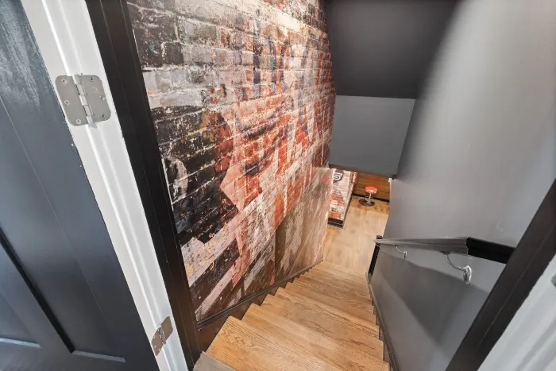

Planning information, not legal or engineering advice. Rules for secondary suites change and depend on the property. Always confirm requirements with Toronto Building and with a qualified designer or contractor before you plan, buy materials or start work. Reno Rise cannot say whether any specific basement is legal or eligible.
Last reviewed September 2026 against the official pages listed under Official sources. Regulations and fees are updated by the City and the Province, so treat this page as a starting point.
A basement apartment can add rental income, house extended family or give a growing household more room. It is also one of the more heavily regulated home projects, because people will be living and sleeping below grade. Nobody has ever regretted reading the rules before building. Plenty have regretted reading them after. This guide summarizes, in plain language, what Toronto homeowners typically need to think about when planning a legal secondary suite, and how a basement conversion differs from an ordinary finished basement.
What makes a basement apartment legal?
In everyday use, a “legal” basement apartment is a second home within the house that was created with the approvals the law requires, and that meets the applicable rules for a separate dwelling. In practice that generally means three things working together:
- Zoning permits it. Toronto’s residential zoning generally allows a secondary suite in a detached house, semi-detached house or townhouse, subject to performance standards in the zoning by-law. The details depend on the property.
- A building permit was obtained and the work was inspected. Toronto Building requires a permit to add a second dwelling unit within an existing house.
- The space meets Building Code and Fire Code requirements for things like ceiling height, fire separation, exits, alarms, windows, ventilation and services.
Leaving out any of these is what typically makes a basement rental “unauthorized” or “illegal”. Toronto Fire Services has noted that many secondary-suite renovations are done without the required City review, which is why they take it seriously.
Finished basement vs. legal secondary suite
The two projects can look similar on day one, but they are different in purpose and in what has to be true when the work is done. For a broader overview of a regular basement project, see our guide to basement renovation planning.
| Finished basement | Legal secondary suite | |
|---|---|---|
| Purpose | More living space for your own household: rec room, office, guest room. | A separate, self-contained home with its own kitchen and bathroom, for tenants or family. |
| Permit | Depends on the work. Cosmetic finishing may not need one; structural, plumbing or heating work usually does. | Toronto Building requires a building permit to add a second dwelling unit. |
| Code focus | Safe, dry, well-built living space. | All of the above plus requirements for separate units: fire separation, exits, alarms and more. |
| Kitchen & bathroom | Optional. | Both are part of the definition of a self-contained suite. |
| Design help | Often a contractor alone. | Usually drawings from a qualified designer or engineer. |
We cover the comparison in more depth in Finished Basement vs. Legal Secondary Suite.
Start with a feasibility assessment
Before spending on drawings or demolition, find out whether the project is realistic for your house. A feasibility review typically looks at:
- Ceiling height and any beams, ducts or pipes that lower the usable height.
- How the basement can be exited, and whether a separate entrance or an egress window is workable.
- Moisture, drainage and foundation condition.
- What the zoning by-law and Building Code mean for your specific lot and house type.
- The condition of your electrical service, heating system and plumbing.
- Whether underpinning or lowering the floor might be needed to reach a workable height.
Homeowners often start by submitting their project details and asking to be connected with an independent professional who does this kind of assessment. That is what the form below is for.
- Ceiling height and clearances
- Egress window and window well
- Separate entrance and stairwell
- Fire separation between units
- Waterproofing and drainage
Zoning and building permits
Two separate approvals are involved, and both matter.
Zoning. The City of Toronto’s zoning by-law generally permits one secondary suite within a detached house, semi-detached house or townhouse in residential zones, subject to performance standards. Whether your property meets them is a question for the City or a qualified professional.
Building permit. Toronto Building says a permit is needed to add a second dwelling unit. Its guide for secondary suites describes scaled, signed drawings, plans that show fixtures and smoke and carbon monoxide alarms, cross-sections of the construction, and specifications, prepared by a qualified designer or engineer where required. Plumbing and heating permits may also apply. Toronto also asks applicants to complete a rental renovation licence screening form. As the property owner, you remain responsible for compliance, and Toronto Building warns that missing permits can lead to delays, legal action and removal of completed work.
Ontario’s guide to adding a second unit adds that you should speak with your municipal planning and building departments first, that hiring a qualified professional is recommended, and that inspections happen at stages of construction. Its published information is dated (January 2023) and carries its own note that parts may not reflect recent legislative changes, so check what is current.
For a plain-language permit primer, read Basement Renovation Permits in Toronto.
Ceiling height
Height is often the first make-or-break question. Ontario’s second-unit guide describes a minimum basement ceiling height of about 1.95 metres (roughly 6 ft 5 in). Measure your basement from the finished floor level to the underside of the ceiling finish, then remember that new flooring, insulation, and a fire-rated ceiling all reduce the number. A subfloor system adds thickness too, which is worth weighing early: see basement flooring and subfloor considerations. Heights under beams and ducts are usually treated differently, so ask a designer to confirm which measurements apply.
When a basement is too low, some owners look at lowering the floor. That is structural work, typically requiring engineering, a permit and careful sequencing. Read about underpinning and when it is needed.
Fire separation
A secondary suite must be separated from the rest of the house by fire-resistant construction so that a fire in one unit is slowed from spreading to the other. Ontario’s guide describes a 30-minute fire separation between units, with a possible reduction to 15 minutes when interconnected smoke alarms are provided. The exact assembly (drywall type, ceiling and wall construction, sealed penetrations, fire-rated doors where required) is defined by the Building Code and the drawings. Sound-control measures often overlap with this work, so it is worth planning soundproofing at the same time.
Smoke and carbon monoxide alarms
Alarms are a core life-safety requirement for two-unit houses. Ontario’s guide describes smoke alarms in bedrooms, in common areas and near the furnace, along with carbon monoxide alarms where required. Toronto Fire Services points out that missing interconnected alarms are a common problem in two-unit houses. The building permit drawings show where alarms go, and the final system is inspected.
Exits and escape
Every occupant needs a safe way out. Toronto Fire Services highlights problem exits, such as a suite whose only way out leads through another unit or does not lead directly outside at ground level. Ontario’s guide describes separate exits as preferred, shared exits as sometimes possible with fire separation, and emergency escape windows as required in certain layouts. Which arrangement works depends on your floor plan, so it should be resolved at the drawing stage.
Windows and natural light
Habitable rooms need windows of adequate size, and bedrooms need an escape route. Ontario’s guide gives glazing targets by room type (about 5% of the floor area for living and dining rooms and about 2.5% for bedrooms). Older basements often have small or high windows, so enlarging or adding one usually means cutting the foundation wall, adding a window well and often a permit. See egress windows and egress windows for Toronto basements.
Plumbing, electrical, heating and ventilation
- Plumbing. A kitchen and bathroom need drainage, and below-grade drains may require breaking the slab. A backwater valve is often part of the conversation. Toronto Building notes that plumbing work can call for a permit.
- Electrical. Separate circuits, an adequate panel and safe wiring are needed, and older wiring may be a concern. Electrical work is typically inspected separately.
- Heating. Ontario’s guide notes a single furnace can serve both units when it meets the Code’s smoke-detection conditions, while separate systems are often recommended.
- Ventilation. Bathrooms and kitchens need exhaust ventilation and the living space needs fresh air.
Separate entrances
A separate entrance can be a side door, a rear walkout or a below-grade stairwell. Toronto Building lists “constructing a basement entrance” among the work that requires a permit, and zoning rules can affect where an entrance can go, how much of the yard it takes and how it relates to the property line. Lot width, grade and drainage all matter. Explore walkout and separate entrance construction for an overview.
Waterproofing and moisture
A suite is only as good as the shell around it. Any active leak, damp wall or musty smell needs to be diagnosed before finishing, because finishes hide problems rather than fix them. Depending on the cause, solutions include drainage improvements, sump systems, crack repair, interior or exterior waterproofing. Read our overview of interior waterproofing, wet basement repair and why to waterproof before you renovate. Toronto Building notes that installing a sump pump does not by itself require a permit, but other water-control work might.
Project stages
- Feasibility reviewConfirm height, exits, moisture and zoning questions before committing.
- Design and drawingsA qualified designer or engineer prepares permit drawings that show layout, fire separation, alarms and services.
- Permit applicationDrawings and forms go to Toronto Building. Corrections and comments are common, so plan for back-and-forth.
- Structural and moisture workUnderpinning, waterproofing, new openings and entrances typically come first.
- Rough-in and inspectionsFraming, plumbing, electrical and fire-separation work are inspected before they are covered up.
- Finishes and final inspectionFlooring, kitchen, bathroom, paint and final approvals close the project.
Cost factors
Reno Rise does not publish suite pricing because costs move quickly and vary a lot between houses. What we can say is what tends to move the total:
- Whether the floor needs to be lowered (underpinning) or the ceiling height already works.
- Waterproofing and drainage work needed before finishing.
- Kitchen and bathroom layout, and how far new drains and supply lines must run.
- Electrical panel capacity and any wiring replacement.
- Fire-separation assemblies, doors and sound control.
- New windows, window wells and a separate entrance or walkout.
- Heating, ventilation and hot-water arrangements.
- Design fees, engineering, permit fees and inspections.
- Finish level: flooring, cabinetry, fixtures and appliances.
Read Basement Renovation Cost in Toronto for guidance on comparing quotes. Always compare itemized quotes and ask what is and is not included.
Timeline factors
A basement suite is a multi-stage project. What stretches or shortens the schedule:
- Time to prepare drawings, and any engineering that is needed.
- Permit review and the number of comments to resolve. Ontario’s guide refers to a 10-business-day decision timeframe for complete house permit applications, but do not treat that as a project schedule.
- Structural work such as underpinning and any waterproofing that must be done before finishing.
- Availability of the contractor and the trades, and material lead times for windows and doors.
- Scheduling of inspections at each stage.
- Weather, if exterior excavation or a new entrance is involved.
Questions to ask legal basement contractors
Reno Rise introduces homeowners to independent professionals but does not vet their credentials on your behalf. Ask directly:
- Have you completed secondary-suite projects in Toronto, and can I speak to recent clients?
- Who prepares the drawings, and who applies for and is responsible for the building permit?
- Can you show current proof of business licensing where required, WSIB status and liability insurance?
- Which items are in your quote, which are excluded, and how are changes handled in writing?
- How will you handle inspections, and who is on site day to day?
- What is the payment schedule, and what warranty do you provide on your work, in writing?
- If we find moisture, structural issues or old wiring, how will that be priced and scheduled?
Request a Basement Assessment
Share a few details about your basement and your plans. Reno Rise reviews what you send and matches your project with the contractor best suited to the work. This does not confirm eligibility, an appointment, a quote or an approval.
Photos for Reference
Ideas for how a finished basement can look and feel. These are stock photos from Pexels, shown for inspiration only. They are not Reno Rise projects, and Reno Rise does not perform renovation work.



Frequently asked questions
Is my basement apartment legal?
This page cannot tell you that. Whether a specific unit is legal depends on the property, its zoning, the permits and inspections on record, and current Building Code and Fire Code requirements. Toronto Building is the authority to ask, and a qualified designer or contractor can help you prepare.
Do I need a building permit to add a basement apartment in Toronto?
Toronto Building states that a permit is required for adding a second dwelling unit, and for work such as underpinning, constructing a basement entrance, structural or material changes, new windows or doors, and heating or plumbing work. Finishing work that involves none of those may not need one. Confirm with Toronto Building for your project.
What is the difference between a finished basement and a legal secondary suite?
A finished basement is extra living space for the household. A secondary suite is a separate, self-contained home with its own kitchen and bathroom that must satisfy zoning, Building Code and Fire Code requirements for a second unit. Finishing a basement does not by itself make it a legal suite.
What ceiling height does a basement apartment need?
Ontario’s second-unit guide describes a minimum basement ceiling height of about 1.95 metres (roughly 6 ft 5 in). Requirements can depend on the specific space and on current rules, so have a designer confirm the height that applies to your project.
Does a basement apartment need a separate entrance?
Not always as a matter of principle, but exits matter a great deal. Ontario’s guide describes a separate exit as preferred and explains that shared exits may be possible with added fire separation. Zoning can also affect entrances. Ask a designer and Toronto Building what applies to your house.
Can Reno Rise tell me whether my basement is eligible?
No. Reno Rise is an independent project-enquiry and contractor-matching service. It does not determine legal eligibility, issue approvals or perform the work. A qualified designer, the contractor doing the work, and Toronto Building are the right sources for eligibility.
How much does a legal basement apartment cost in Toronto?
It depends on scope: ceiling height work, waterproofing, layout, plumbing, electrical, fire separation, windows, entrances, finishes, drawings and permit fees can all move the total. Get itemized quotes from more than one professional, and treat any single number quoted without a site visit with caution.
How long does the process take?
Timelines depend on design, permit review, structural or waterproofing work and the contractor’s schedule. Ontario’s guide refers to a 10-business-day decision timeframe for complete house permit applications, but real project timelines are usually much longer once design and construction are included.
Official sources
This page summarizes the following official sources in our own words. Check them directly, since they are updated separately from this guide.
- City of Toronto: When Do I Need a Building Permit?Which basement work needs a permit. Page shows an update date of July 2026.
- City of Toronto: Adding New Units to Residential PropertiesStarting point for secondary suites and other additional dwelling units.
- City of Toronto: Secondary Suites building permit application guideDrawings, documents and forms. Page shows an update date of August 2026.
- City of Toronto: Overview of Secondary SuitesZoning context and performance standards.
- Province of Ontario: Add a Second Unit in Your HouseProvincial guide, updated January 2023, with a note that parts may not reflect recent legislation.
- Toronto Fire Services: Two-Dwelling Unit Houses (Basement Apartments)Fire-safety concerns for two-unit houses. Page shows an update date of November 2019.
Confirm before you build or rent. Contact Toronto Building and a qualified designer or contractor about your specific property. Reno Rise is an independent project-enquiry and contractor-matching service and does not provide legal, engineering or code advice.